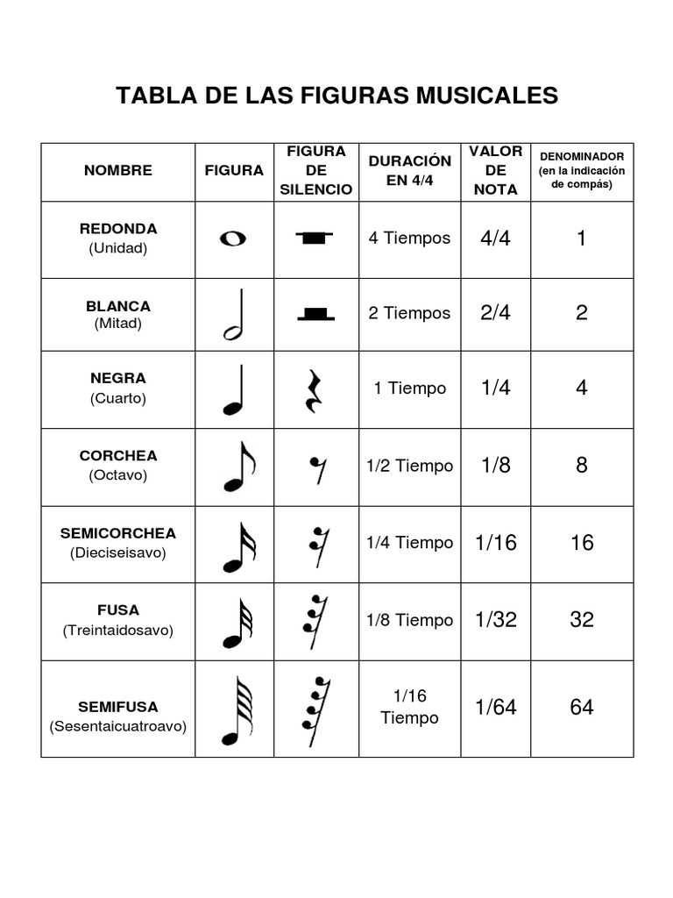
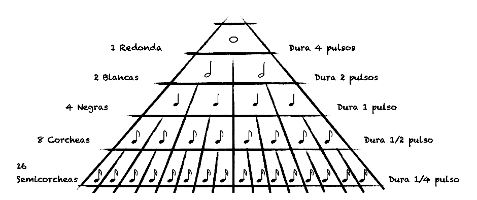
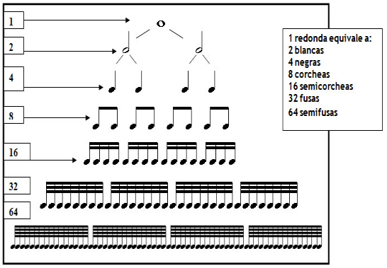
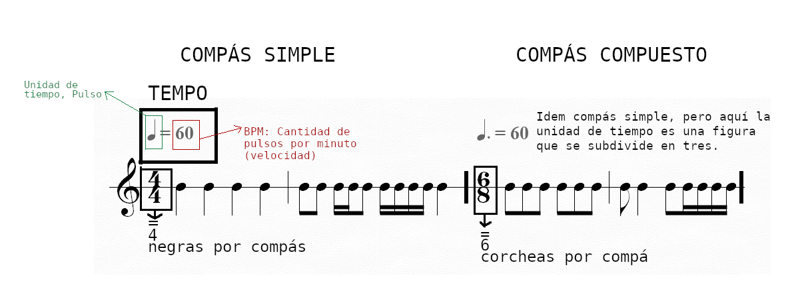

CUESTIONES DEL RITMO
Definición de ritmo
El ritmo puede entenderse, en un sentido amplio, como un orden en el movimiento. Esta idea, presente ya en el pensamiento de la filosofía antigua, concibe al ritmo como una forma de organización de aquello que cambia en el tiempo.
Desde esta perspectiva, el ritmo no es exclusivo de la música: aparece en fenómenos naturales, en el lenguaje, en el cuerpo y en múltiples formas de la experiencia humana.
En música, el ritmo es la organización del sonido en el tiempo, construida a partir de la duración de los sonidos y los silencios, y estructurada sobre una base de pulsos regulares.
Las -Figuras Musicales-
Las figuras musicales son los símbolos que se utilizan en la escritura musical para representar la duración de los sonidos en el tiempo.
Principales figuras
- Redonda – duración más larga
- Blanca – 1/2 de la redonda
- Negra – 1/2 de la blanca
- Corchea – 1/2 de la negra
- Semicorchea – 1/2 de la corchea
- Fusa – 1/2 de la semicorchea
- Semifusa – 1/2 de la fusa
Cada figura dura la mitad de la anterior, formando una subdivisión del tiempo musical.
La duración real depende del tempo (BPM), pero la relación entre las figuras se mantiene constante.
Cuadros: cómo se escriben las figuras musicales y sus relaciones de valores

Para entender las columnas 4, 5 y 6, se recomienda leer toda esta sección de ritmo
Si tomamos como referencia de pulso a la negra, podemos leer el siguiente gráfico de la siguiente manera:

Cuadro de equivalencias completo de redonda a semifusa:

Definición de Pulso
El pulso es la sucesión regular de tiempos que se perciben de manera constante en una pieza musical. Funciona como una “base” sobre la cual se organizan los ritmos, y puede ser más o menos rápido según el Tempo musical.
Unidad de tiempo
La unidad de tiempo es la figura musical que representa la duración de cada pulso dentro de una obra. Es, en otras palabras, la base sobre la cual se percibe la pulsación regular.
En los compases simples, la unidad de tiempo es una figura divisible en dos partes iguales (subdivisión binaria), como la negra en 2/4, 3/4 o 4/4.
En los compases compuestos, la unidad de tiempo es una figura con puntillo, ya que cada pulso se divide en tres partes iguales (subdivisión ternaria). Por ejemplo, en 6/8 la unidad de tiempo es la negra con puntillo.
La unidad de tiempo constituye la referencia interna del pulso en la obra. Cuando esta unidad se relaciona con una velocidad determinada (expresada en BPM, es decir, pulsos por minuto), se establece el TEMPO.
Velocidad de pulso (Tempo)
La velocidad del pulso, o tempo, indica qué tan rápido o lento se ejecuta una obra musical.
Se mide en BPM (beats por minuto), es decir, la cantidad de pulsos que ocurren en un minuto.
Estos pulsos están determinados por la unidad de tiempo, que define qué figura musical representa cada pulso. De este modo, el tempo surge de la relación entre la unidad de tiempo y su velocidad de ejecución.
Compás
El compás es la organización regular de los pulsos en grupos dentro de una obra musical. Estos grupos se repiten de manera constante y permiten estructurar el ritmo en el tiempo.
Cada compás está formado por una cantidad determinada de pulsos, definidos por la unidad de tiempo, y organizados según un patrón de acentuación (tiempos fuertes y débiles).
De este modo, el compás articula los elementos fundamentales del ritmo: toma el pulso como base, utiliza la unidad de tiempo para representarlo y se desarrolla a una velocidad determinada por el tempo.
Compás simple y compuesto
Los compases se clasifican según la forma en que se subdivide cada pulso.
Compás simple
En los compases simples, cada pulso se divide en dos partes iguales (subdivisión binaria).
Ejemplos: 2/4, 3/4, 4/4.
Compás compuesto
En los compases compuestos, cada pulso se divide en tres partes iguales (subdivisión ternaria).
Ejemplos: 6/8, 9/8, 12/8.
Esta diferencia en la subdivisión modifica la percepción del ritmo y del pulso, generando sensaciones métricas distintas dentro de la música.
Numerador y denominador del compás
El compás se representa mediante una fracción que aparece al comienzo de la obra. Esta fracción indica cómo se organiza el ritmo en el tiempo.
El numerador (número superior) indica la cantidad de pulsos que hay en cada compás.
El denominador (número inferior) indica qué figura musical representa a la figura que equivale a un pulso.
De este modo, la fracción del compás establece cuántos pulsos hay y qué duración tiene cada uno de ellos.
Relación entre figuras y denominador
| Figura | Valor | Denominador |
|---|---|---|
| Redonda | Unidad completa | 1 |
| Blanca | 1/2 | 2 |
| Negra | 1/4 | 4 |
| Corchea | 1/8 | 8 |
| Semicorchea | 1/16 | 16 |
Etc....
Es importante tener en cuenta que el denominador no siempre indica la unidad de tiempo. En los compases simples, suele coincidir con ella (por ejemplo, en 4/4 la negra es la unidad de tiempo). Sin embargo, en los compases compuestos esto no ocurre: en un compás de 6/8, el denominador indica que hay seis corcheas en el compás, pero el pulso principal se organiza en dos unidades, cada una equivalente a una negra con puntillo.
Como se ve todo esto representado:
